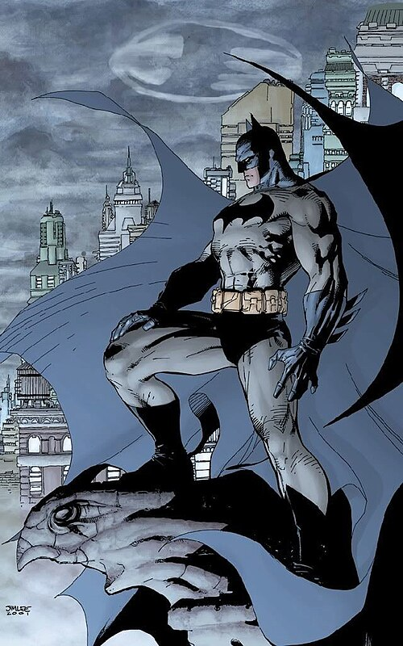

Бэтмен — один из самых культовых супергероев вселенной DC Comics. Под маской Тёмного рыцаря скрывается Брюс Уэйн — миллиардер, промышленник и филантроп, поклявшийся защищать свой родной город Готэм от преступности.
Как и у Железного человека, у Бэтмена нет сверхчеловеческих способностей. Своей силы он добился благодаря годам упорных тренировок, выдающемуся детективному интеллекту и передовым технологиям своей компании «Wayne Enterprises». Образ летучей мыши он выбрал, чтобы вселять страх в преступников.